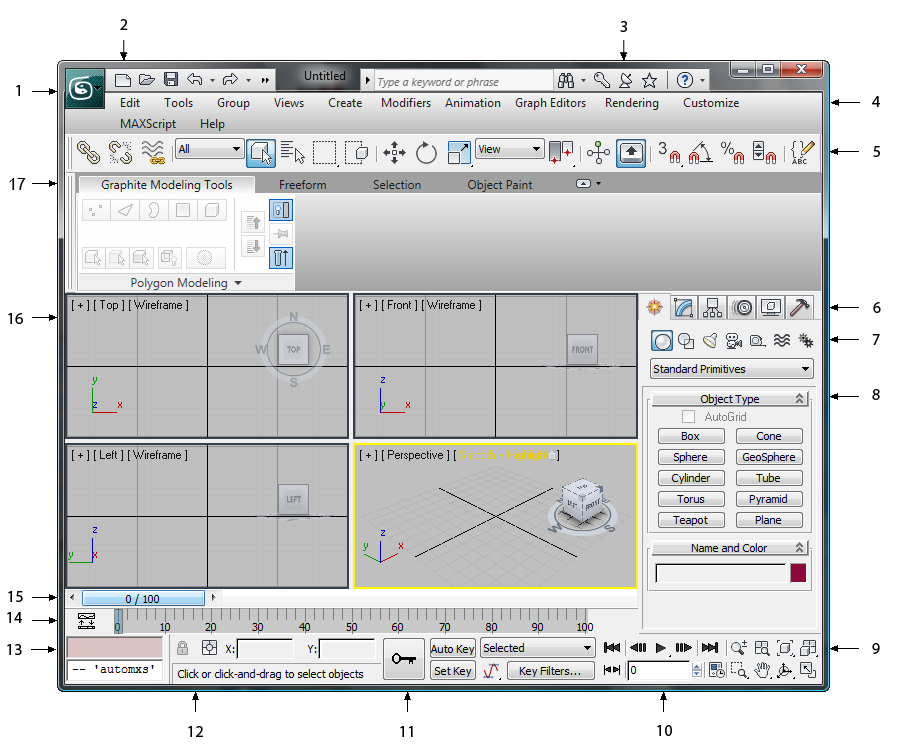

خبرنامه
با عضویت در خبرنامه آخرین اخبار و مطالب را در ایمیل خود دریافت نمایید.
جلسه اول
آشنایی با محیط کار نرم افزار
برای آشنایی با هر نرم افزار باید با محیط آن نرم افزار آشنایی داشته باشید و برای استفاده از آموزش ها ( نوشتاری و دیداری) باید با محل و نام قسمت های مختلف از قبیل منوها ، آیکون های مختلف و … آشنا باشید .ما در این سری آموزش تری دی مکس سعی می کنیم آموزش قدم به قدم تری دی مکس رو قرار بدیم و آموزش ۳d max از مبتدی تا پیشرفته شامل مباحث ما بشود.برای آشنایی با نرم افزار ۳d max و شروع کار با ۳ds Max خب به طبع اولین کار آشنایی با محیط نرم افزار ۳d max است .
نرم افزار تری دی مکس یک فضای نا محدود در اختیار شما قرار می دهد . به صورت پیش فرض شما از چهار نمای مختلف می توانید به فضای موجود در تری دی مکس نگاه کنید.در واقع این چهار نما ، مانند چهار پنجره مختلف است که شما از آن پنجره ها به محیط احاطه پیدا می کنید . این نرم افزار مانند دیگر نرم افزار ها از منو ها مختلف تشکیل شده و همچنین برای در دسترس بودن و سریعتر شدن روند کار دکمه های اضافی نیز در اختیار کاربر قرار می دهد . در عکس زیر یک نمای کلی از منوی تری دی مکس به همراه اسم و اصطلاح های مربوطه را مشاهده میکند . در آینده هر قسمت به طور مجزا بررسی خواهد شد

1.Application button دکمه برنامه
2.Quick Access toolbar نوار ابزار دسترسی سریع
3.InfoCenter مرکز اطلاعات
4.Menu Bar نوار منو
5.Main toolbar نوار ابزار اصلی
6.Command panel tabs زبانه دستورات
7.Object categories (Create panel) دسته بندی اشیاء
8.Rollout رول اوت ( پنل باز و بسته شو که تنظیمات دستور انتخابی در آن وجود دارد)
9.Viewport navigation controls کنتر پیماش پنجره های دید
10.Animation playback controls کنترل های پخش انیمیشن
11.Animation keying controls کنترل های کلید انیمیشن
12.Prompt line and status bar controls خط فرمان
13.MAXScript mini-listener نمایش دستورات اسکریپت
14.Track bar تراک بار ( مسیر انیمیشن )
15.Time slider نوار لغزنده زمان
16.Viewports پنجره های دید
17.Modeling ribbon نوار مدل سازی